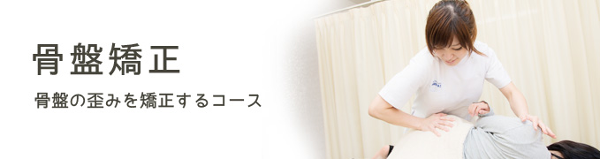
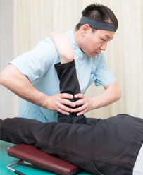

骨盤矯正の効果
- 生理痛、生理不順の改善が見られる
- 腰痛が消え、股関節の動きも軽快になる
- 肩こり、頭痛が解消する
- 姿勢がよくなったと言われる
- 股関節の可動範囲が広がる
ヒールを履く女性は、足裏に角度がつくことによって前傾姿勢を強いられます。
そのままでは歩きづらい為、腰が反っくり返るような姿勢になり、骨盤が出っ張っている女性が増えています。クラシックバレエや新体操の選手も、つま先立ちのまま長時間踊り続けることが多く、特に子どものころから続けている方は骨盤前傾になりやすくなります。
現役のころは筋肉がしっかりついているので、痛みが出たり、太ったりすることはありません。しかし長年つま先立ちでお尻に力を入れてきたために、お尻の筋肉が固くなり、結果、足に行く血流も悪くなります。太りやすくなり、腰の痛みも出てきやすくなります。
骨盤が開いてしまうケースでも、お尻が大きくなるとともに、内臓が下がってくることもあります。内臓不良で便秘になったり、女性は子宮を圧迫されることで生理痛になったり、ホルモンバランスが乱れたりします。さらに血流が悪くなって冷えの症状が出ることがあります。
腰椎と股関節を結ぶ大きな筋肉を大腰筋といいます。左右均等に2本伸びていますが、この均等が崩れ、どちらかが固くなると、どちらかの動きが悪くなったり、動きが悪いほうに痛みが出たりすることがあります。骨盤に関わるゆがみもこのように一様ではありません。
施術の流れ

筋肉をほぐしながら、骨盤を矯正していきます。お尻の筋肉は長い時間座っていると、どんどん固くなっていきます。固いところは、一番動きづらいところでもあります。特に関節周りの筋肉を柔らかくして、関節の動き，柔軟性を引き出したところで、矯正に移ります。
ステップ１
ご来院
ステップ２
問診･カウンセリング
ステップ３
姿勢分析
ステップ４
ほぐし
ステップ５
矯正
全身のゆがみをとりつつ、体に無理がかからないよう、臀部と脚を重点的に矯正します。
ステップ６
ドロップベッド
さらに骨盤を締めていきます
ステップ７
アドバイス
体全体のバランスを見て、骨盤の開きやくびれの高さ、足の長さを確認します。またご自身で家でできるストレッチ法をお伝えします。
ストレッチは矯正後の効果を安定させ、体のゆがみをとるために大切です。
料金
お体の検査や、カルテの作成の為に検査料をいただいております。
| 初回のみ | 2,000円 |
|---|
骨盤の開きが気になる方
| 1回 60分 | 5,000円 |
|---|
患者様の声
数年前から左の股関節が痛くなりました。整形外科で受診して、レントゲンを撮っても、悪いところは見当たらないと言われました。目には見えなくても痛みを確実に感じられるのに…。
そんなとき頼りになったのがこの整体院でした。骨盤の矯正を受けたところ、今は痛みが消えています。問題は骨ではなく、筋肉にあったようです。（50代 女性）